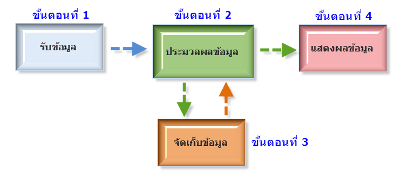

| หน้าแรก | การทำงานของคอมพิวเตอร์ | องค์ประกอบของคอมพิวเตอร์ | การประกอบของคอมพิวเตอร์ | ฮาร์ดแวร์คอมพิวเตอร์ |
การทำงานของคอมพิวเตอร์ การทำงานของคอมพิวเตอร์จะเริ่มจากผู้ใช้ป้อนข้อมูลผ่านทางอุปกรณ์ของหน่วยรับเข้า (Input device) เช่น คีย์บอร์ด เมาส์ ข้อมูลจะถูกเปลี่ยนให้เป็นสัญญาณดิจิทัล ประกอบด้วยเลข 0 และ 1 แล้วส่งต่อไปยังหน่วยประมวลผลกลาง เพื่อประมวลผลตามคำสั่ง ในระหว่างการประมวลผลข้อมูลจะถูกเก็บไว้ที่ (Random Access Memory: RAM) ทำหน้าที่เก็บข้อมูลจากการประมวลผลเป็นการชั่วคราว ขณะเดียวกัน อาจมีคำสั่งให้นำผลลัพธ์จากการประมวลผลดังกล่าวไปแสดงผลผ่านทางอุปกรณ์ผ่านทางอุปกรณ์ของหน่วยส่งออก เช่น จอภาพ หรือ เครื่องพิมพ์ นอกจากนี้เราสามารถบันทึกข้อมูลที่อยู่ในอนาคต โดยการอ่านข้อมูลที่บันทึกในสื่อดังกล่าวผ่านทางเครื่องขับหรือไดร์ฟ (drive) การส่งผ่านข้อมูลไปยังหน่วยต่างๆ ภายในระบบคอมพิวเตอร์จะผ่านทางระบบบัส (bus) อุปกรณ์ของหน่วยรับเข้าและส่งออก จะเชื่อมต่อกับตัวเครื่องที่เรียกว่า ซิสเต็มยูนิต (System unit) มี เคส (case) เป็นโครงยืดให้อุปกรณ์ต่างๆประกอบกัน ภายในเคสจะมีเมนบอร์ด (Mainboard) เป็นแผนวงจรหลัก โดยซีพียู หน่วยความจำ การ์ด รวมถึงอุปกรณ์ต่างๆ จะถูกต่อกับเมนบอร์ดนี้ทั้งสิ้น 
|